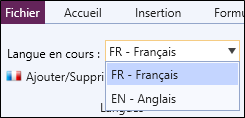
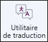
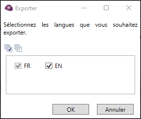
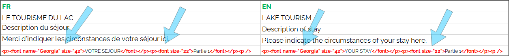
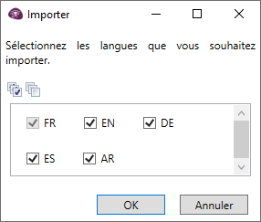

TRADUIRE L’ENQUÊTE
Dans le cadre d'une enquête multilingue, il est nécessaire de traduire le questionnaire afin de pouvoir l'adresser à des répondants parlant des langues différentes. Avant de pouvoir traduire le questionnaire, vous devez indiquer les différentes langues qui vont être utilisées lors de la diffusion de l'enquête. Pour ce faire :
-
Dans le stade de création du questionnaire, allez dans l'onglet Langues.
-
Cliquez sur .
-
Définissez ensuite les langues.
-
Naviguez entre les différentes langues à l'aide du menu déroulant prévu à cet effet.

ATTENTION : Si vous manipulez des modalités dans vos calculs, utilisez plutôt leurs numéros que leurs libellés. Sinon certains calculs risquent de ne pas s’exécuter correctement à la saisie.
-
Procédez à la traduction :
Traduction automatique du questionnaire
Pour traduire le questionnaire de façon automatique, procédez comme suit :
-
Dans le stade de création du questionnaire, allez dans l'onglet Langues.
-
Cliquez sur Utilitaire de traduction.

-
Indiquez la langue source et la langue cible.
-
Cliquez sur OK pour valider.
La traduction se fait alors automatiquement, et vous êtes redirigé sur le formulaire en langue cible. Vous devez procéder de même pour chaque traduction que vous souhaitez faire automatiquement.
Traduction manuelle du questionnaire
Si vous ne souhaitez pas utiliser la traduction automatique mais traduire vous-même l'enquête ou la faire traduire par une autre personne (traducteur), vous devez alors exporter le questionnaire dans la langue de référence (langue source). Après avoir défini les différentes langues qui seront utilisées, procédez comme suit :
REMARQUE : Désormais, le nom, la description des vues d'analyses ainsi que les textes qui y sont présents seront également exportés dans le fichier de traduction afin de pouvoir les traduire.
-
Depuis l'onglet Langues, sélectionnez la langue de référence depuis le menu déroulant prévu à cet effet.
-
Cliquez sur Exporter.
-
Sélectionnez les langues à exporter.

-
Cliquez sur OK pour valider.
Sur la première feuille du classeur, vous retrouverez une langue par colonne. Vous devez directement faire la traduction dans ce fichier en vous référant à la première colonne qui présente toutes les parties, questions et modalités dans la langue de référence.
ATTENTION : Il ne faut pas supprimer ou modifier le contenu des balises HTML qui se trouve dans certaines cellules lors de la traduction. En effet, si ce contenu est modifié, la traduction du texte ne sera pas reconnue.
voir l'exemple ci-dessous :
Une fois la traduction faite pour chacune des langues dans le fichier Excel, vous devez importer la traduction dans le logiciel Sphinx iQ3. Pour ce faire :
-
Depuis l'onglet Langues, cliquez sur Importer.
-
Sélectionnez le fichier (Excel) dans lequel les traductions ont été faites.
-
Sélectionnez les langues que vous souhaitez importer.

-
Cliquez sur OK pour valider.
Permettre aux répondants de sélectionner la langue du questionnaire
-
Depuis l'environnement de conception du questionnaire, cliquez sur l'onglet Diffusion.
-
Cliquez sur Définir des raccourcis.
-
Sélectionnez Demander depuis le menu déroulant Langue
Plus d'informations sur le paramétrage des raccourcis.
-